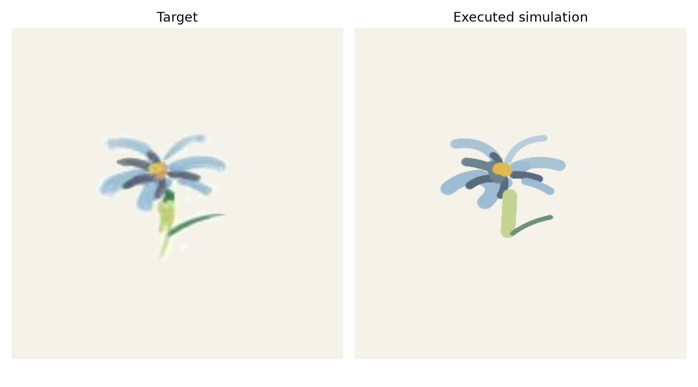
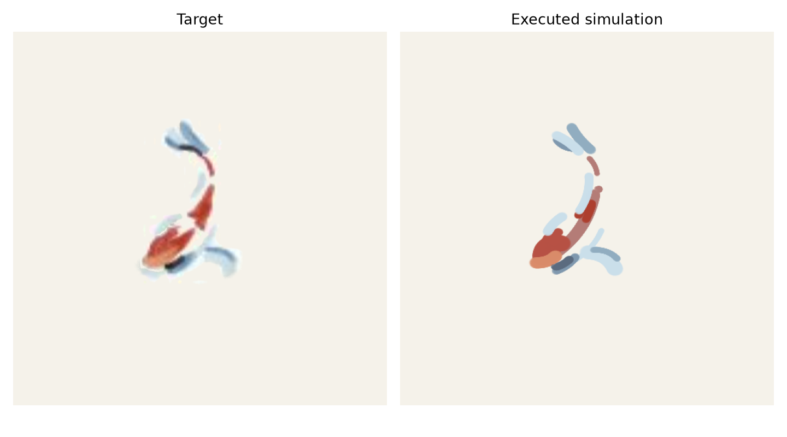
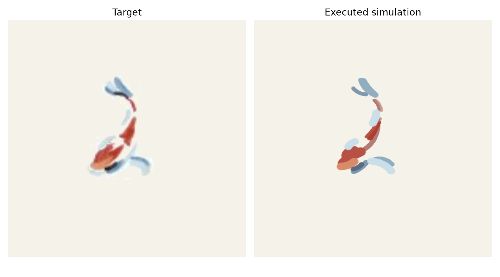

本报告比较同一阶段一场景、同一阶段二 checkpoint 和同一批 Flower/Fish 目标下的三个阶段三版本：1107014 原始基线、只修复确定诊断错误的基线、以及通用候选分解与 seed 选择优化版。
结论：修正基线与原始基线的实际画面逐像素一致。通用优化版在 Flower/Fish 的加权灰度 L1 上分别改善 3.23% 和 2.15%，视觉上减少了跨空白长笔并保留了部分浅蓝/深蓝细节；它仍有粗细、位置和漏笔问题，不能宣称已经完全复现论文效果。单笔实验反而退化，因此优化版是可审查的候选改进，不是无条件替代基线。
数值来自各版本的 原始基线、修正基线 和 优化版。执行误差是最终真实仿真画布与目标的灰度 L1；越低越好。LPIPS 没有运行。
| 任务 | 版本 | 全画布灰度 L1 | 加权灰度 L1 | 改变区域 L1 | 背景 L1 | 力 RMSE / N | 轨迹 RMSE / mm |
|---|---|---|---|---|---|---|---|
| single_stroke | 1107014 原始 | 0.0001904 | 0.0009305 | 0.06076 | 0.0000426 | 0.01035 | 0.0654 |
| 修正基线 | 0.0001904 | 0.0009305 | 0.06076 | 0.0000426 | 0.01035 | 0.0654 | |
| 通用优化 | 0.0002424 | 0.0011849 | 0.06877 | 0.0000753 | 0.01013 | 0.0661 | |
| flower | 1107014 原始 | 0.0041073 | 0.0149452 | 0.06203 | 0.0003072 | 0.00843 | 0.1137 |
| 修正基线 | 0.0041073 | 0.0149452 | 0.06203 | 0.0003072 | 0.00843 | 0.1137 | |
| 通用优化 | 0.0039749 | 0.0144630 | 0.06060 | 0.0002599 | 0.00821 | 0.1214 | |
| fish | 1107014 原始 | 0.0037938 | 0.0147551 | 0.07955 | 0.0003256 | 0.02453 | 0.1197 |
| 修正基线 | 0.0037938 | 0.0147551 | 0.07955 | 0.0003256 | 0.02453 | 0.1197 | |
| 通用优化 | 0.0037123 | 0.0144379 | 0.08024 | 0.0002086 | 0.02060 | 0.1052 |
Flower 加权 L1 相对降低 3.23%；Fish 相对降低 2.15%。优化版的单笔加权 L1 上升 27.34%，所以整体结果不能只看两幅多笔画。三版使用同一个 checkpoint SHA-256：831ea440fd73c275e350e65cca236598b5aff4b5a1b4ba74a646a58744799d35。




目标图、每轮目标、每轮预测和执行结果均保存在各版本目录；优化版的完整逐轮审计图见 Flower montage 和 Fish montage。
以下视频是保存动作的连续仿真重放。优化版视频包含完整 Flower/Fish 执行；修正基线视频用于直接比较。求解器计算等待不在视频时间轴内。
| 任务/轮次 | 看到的现象 | 归因判断 |
|---|---|---|
| Flower R1 | 浅蓝外瓣先形成，左侧和下侧仍未执行；执行与同轮模型预测接近。 | 主要是目标笔画分解和恒宽圆头表达限制，不是力控把正确预测画坏。 |
| Flower R4-R6 | 深色花瓣位置基本对，但笔端偏圆、颜色偏均匀。 | 动作几何和颜料离散化限制，预测与执行误差较小。 |
| Flower R7-R10 | 浅黄绿花柄和深绿断笔出现，右伸细绿在后续出现；底部极淡细茎仍缺失，局部短绿仍偏粗。 | 细区域候选和有限笔数排序仍不足；这是分解/规划问题，不能归咎于执行。 |
| Fish R1-R3 | 优化版没有再用一条长红笔跨过中下部空白，但中部红区仍偏圆且重复用笔。 | 连续支持检查改善跨空白错误；同一区域内的笔数分配仍不佳。 |
| Fish R4-R9 | 顶部蓝笔和底部蓝笔逐步出现，浅蓝细节仍有遗漏或过直。 | 候选颜色/形状评分对低对比细笔仍不稳定，执行轨迹没有明显偏移。 |
| Fish R10-R11 | 深蓝细节被补出，最后浅蓝弧的位置接近但过长、过直。 | 规划动作本身已经偏离目标，模型和执行都一致，因此不是力控故障。 |
Flower R1 · Flower R7 · Flower R10 · Fish R1 · Fish R7 · Fish R11
| 改动 | 作用 | 与论文的关系 |
|---|---|---|
| 保留细笔区域，关闭细区域的形态学开/闭运算 | 避免相邻浅色细笔在候选提取前消失。 | 通用预处理修正；论文没有给出实现细节。 |
| 候选池返回几何和力值变体 | 让 MPC 看到不同长度、宽度和法向力假设，而不是只保留面积最大的单笔。 | 论文的 PCA/RANSAC 初始化和 MPC 结构保留；候选池扩展是本地实现。 |
| 用 learned dynamics 贪心选择 seed | 用部署模型的预测终态和 RGB 辅助目标评价候选，减少宽笔吞掉相邻细笔。 | 属于规划增强；论文没有明确公开这一 seed 选择机制。 |
| 增加通用合成回归测试 | 用两条相邻、不同长度细笔确认候选池包含多种长度和力值。 | 工程验证，不改变 Flower/Fish 的专用数据或动作。 |
| Stage 1/2 | 本轮没有重建场景或重新训练动力学模型；沿用相同场景和 checkpoint。 | 因此本轮差异可以归因于 Stage 3，而不是混入新的训练结果。 |
保留的论文式流程包括：阶段二学习画布动力学、PCA/RANSAC 图像差分初始化、H=5 的 receding-horizon MPC、每轮最多执行两笔后重新观察、CMA 风格协方差更新，以及 17/18 笔 Flower/Fish 测试规模。三版没有复现论文 baselines。
论文没有公开 Flower/Fish 的原始高清画面、每一笔的颜色和动作标注。这里使用作者 Fig. 8 的公开图版裁剪和目标检查点，因此不能回答“论文中的每一笔到底由画家给出还是由 PAC/RANSAC 拆出”的问题，更不能把本地误差直接等同于论文硬件指标。当前画笔为恒色、恒力、恒宽二次曲线，难以表达真实油画的笔锋、变宽、浓淡和流动。
最终证据：优化版文字报告 · 优化版 metrics · 优化版视觉审计指标 · 论文原文副本。
IMPASTO_STAGE3_CONFIG=configs/stage3_optimized_general.json bash scripts/run.sh scripts/run_stage3.py
bash scripts/run.sh scripts/audit_refinement.py --report-dir reports/optimized_general_final --out-dir reports/optimized_general_final/audit
bash scripts/run.sh -m pytest -q，结果：26 passed。